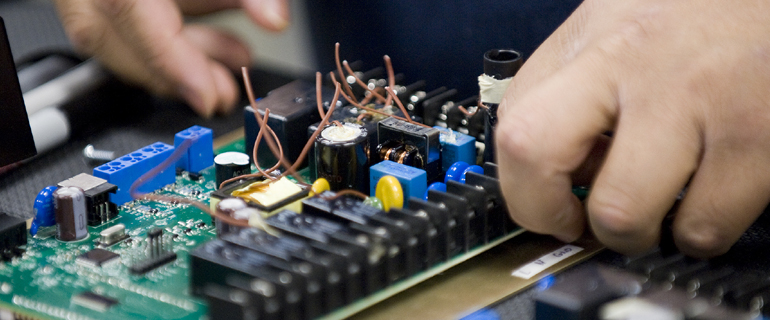

How AEI Can Help
Market Selection and Requirements
Right at the product concept stage, it is best to determine which markets you want to target. Once you have determined that, Aggarwal Engineering Inc. can help you determine the local, regional and/or national rules, regulations, codes, safety and any performance requirements your product must comply with for each market. This could help you to confirm the target areas and guide you towards the most cost effective markets to target initially.
Preliminary Design Review
As we have determined all the rules, regulations, codes and standards your product must comply with, we will work with you during the early design stage and evaluate drawings, schematics, and/or a product’s construction for the purpose of compliance with established standards and assist in finalizing the design. We will provide recommendations on component selection and establish guidelines for meeting the mandatory requirements, and other common issues. We then develop a set of recommendations on how to proceed through the certification process in the shortest time, and for the least cost.
Construction Evaluation
Once you have a prototype, or have a product that has not yet been evaluated to the standard you need, we conduct a thorough examination of a product’s construction by going through the relevant standard(s) and other requirements clause-by-clause. We then produce a detailed report that documents non-compliances and provides specific solutions for each one.
• Following are some of the items which will be reviewed during this phase:
• Safety critical components, required approvals on these components and whether they are used within their conditions of acceptability.
• Spacings – both creepage and clearance distances, these are critical and if not designed properly can add lots of extra cost and time.
• Constructional materials especially plastics – extra care should be taken when it comes to using plastics. Depends upon the usage, they have to comply with specific requirements for flame tests, CTI, RTI, HWAI etc. These also will add cost and delay the process if wrong materials are used.
• Documentation – certification agencies normally will require BOM (bill of materials), operation, installation and maintenance manuals, schematic and construction diagrams, information on the components and materials.
• Samples – we can advise you what samples will be required for testing. In addition to the samples, agencies normally require spare components (fuses, PTC, transformers, motors, unpopulated PWB.s). We will help you put the package together for speedy and cost effective process.
Agency selection and process for certification especially for multiple markets
If you are targeting multiple markets, you might need approval marks of more than one agency. One option will be to work with each agency separately and go through similar testing and approval process a number of times at a huge cost. Alternatively, you can take advantage of the experience of Aggarwal Engineering Inc. to simplify the process. As they have worked with most of the agencies worldwide, they can advise you how best to go about this complicated process.
Project Management
We offer complete project management of the submittal of a product to the NRTL or other international agencies, from submittal until certification is issued. We will answer any and all questions from the agency and work to resolve any and all issues that arise as part of this process. In the event your product fails a test, we will work with you and the agency to fully document each non-compliance, we will then provide specific recommendations for how to bring the product into compliance, and make a re-submittal.
Post Certification (Maintenance)
All approval agencies when they issue their Certification Mark for your products will have follow-up inspections at the manufacturing facilities. We can help you prepare these facilities so that the inspection process is efficient and smooth. Also we will keep you advised in case the requirements/standards are updated as to what action is required from your side and whether you need to make any changes to the product to comply with the updated requirements. We will evaluate the impact of these updates on existing approvals and help with file updates.
Qualification of Laboratories
If you have an in-house testing laboratory or if you are planning to set up one and you would like to get the agency to witness the test at your facility, we can help you to get the laboratory to the appropriate standard. If your aim is to get the laboratory accredited by a third party to IEC 17025, we can help you with the gap analysis, requirements, processes and procedures so that you will comply during the first audit.
Qualification of Laboratories
If you have an in-house testing laboratory or if you are planning to set up one and you would like to get the agency to witness the test at your facility, we can help you to get the laboratory to the appropriate standard. If your aim is to get the laboratory accredited by a third party to IEC 17025, we can help you with the gap analysis, requirements, processes and procedures so that you will comply during the first audit.
CE Marking
The CE marking must be applied to products that are covered by the European New Approach Directives (EU Directives) and Regulations (EU Regulations). All products bearing the CE marking have free access to the entire market within the European Economic Area (EEA). Our experts will help you with
Product investigations to determine the applicable CE legislation, directives and related European standards;
• Conformity product testing to prove compliance with applicable standards;
•Perform or evaluate standardized risk assessments (if required);
•Compile or verify Technical (Construction) Files;
•Implementation and verification of Quality Assurance Systems;
•Technical solutions and modification proposals to comply with the applicable CE legislation and harmonised standards;
•Legal compliance control of (technical) product documentation (i.e. drawings, risk assessments, (technical) test reports, User Instructions, etc.);
•Compile and/or verify Declarations of Conformity;
•In-company training programs for CE marking.
By affixing the CE marking, the manufacturer, the European Authorized Representative or the European importer confirms, and takes the responsibility, that the product complies with the European safety requirements.